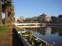
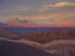
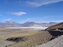
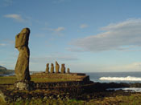
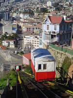

| Travel Information |
 The closest international airport to Valparaiso (Viña del Mar) is the Santiago International airport (SCL). Valparaiso (Viña del Mar) is about 110kms from Santiago. Here are some options to go from the Santiago International Airport to Viña del Mar. Note that participants arriving on Saturday the 21st or Sunday the 22nd of June should consider taking the shuttle sevice as the easiest and least expensive option. By shuttle: Bohemia Tour offers shuttle (transfer) and bus services between the Santiago International Airport and any hotel in Viña del Mar. To maximize the number of persons in each minivan or bus and thus lower the individual rates (the rate for a minivan (between 4 and 10 persons) is for instance CLP$75.000), please send your name and flight information (date and time of arrival and departure, airline company, and flight numbers) before the 14th of June to info@bohemiatour.cl. In the days prior to your departure, you will receive an e-mail specifying the number of persons with whom you are scheduled to share a minivan or bus (and consequently the cost of your trip) . You will then be able to decide in advance whether this represents an affordable option. By bus: from the airport, take a bus Tur-Bus Aeropuerto or Centropuerto (CLP$1.500, every 15 minutes, make sureto ask if it stops at the Terminal de bus Pajaritos ) or a taxi (CLP$10.000, do not pay more than this) to the Terminal de bus Pajaritos. Then take a bus to Viña del Mar from Tur-Bus or Pullman Bus (CLP$3.600, every 15 minutes). The bus will take about an hour and a half to get to Viña del Mar. Finally, in Viña del Mar, take a taxi to your hotel (between CLP$2.500 and CLP$3.500). Taxis are in general very safe in Chile. However, it could be a good advice to pay your taxi inside the airport instead of directly to the driver. Never accept to be taken directly from the airport to Viña del Mar. This could end up costing you quite a lot of money! If you want to do it anyway, make sure to negociate the price beforehand. By car: many major international car rental companies have offices at the Santiago International Airport. From the airport, the drive to Viña del Mar is on a very safe highway (On this map the airport is located in Pudahuel to the west of Santiago. From the airport, follow the directions to Autopista 68 and then follow the directions to Viña del Mar ). Beware that there are two tolls (CLP$1.200 each) on the highway. So make sure you have Chilean pesos before starting your journey! |
| Visa Information |
Citizens of most countries of Europe and North America do not need a visa to enter Chile. Upon entry you will only have to present a valid passport and tourist card (given to you by the flight attendant or your travel agent). An unofficial list of countries whose citizens do not need a visa to enter Chile can be found here. To confirm the information on visa requirements for your particular country, please contact the nearest Chilean Embassy or Consulate. A complete list of Chilean foreign missions can be obtained at www.minrel.gov.cl (once on the website go to the top right corner to Misiones en Exterior where you will find the necessary information organized by region). In case citizens of your country require a tourist visa to enter Chile, the procedure is usually simple and takes in average about 7 business days. You will normally be asked to fill out a visa application form (obtained from the Chilean Embassy or Consulate), to present a valid passport, a round trip ticket, a proof of financial resources (usually a copy of the international credit card) and a passport size photo. In some cases you may be required to present a letter of invitation from somebody in Chile. Should this be the case, please contact the FPSAC committe in advance, and such a letter will be provided to you. |
| A Snapshot of Chile | |||
 Around 16 million inhabitants live on the Chilean territory, which is 175 km wide and over 4300 km long. The population of Chile, although quite homogeneous in the Central Region, is composed of many ethnic groups such as the Aymaras, the Mapuches, and the Easter Islanders. The official language is Spanish; the dominant religion is Catholicism and the currency – the Chilean Peso - is valued at around CL$480 per 1 US dollar.  Chile, often regarded as one of South America's safest and most economically and politically stable countries, has experienced a dramatic increase in tourism over the last few years. Chile is a photographer’s and traveler’s paradise for all its colors and shapes. From north to south the landscape changes dramatically, and so do the colors. Lunar landscapes, deserts, active geysers and salt lakes can be found in the North; while densely forested areas, waterfalls, ice fields, glaciers, fjords and lakes can be found in the South. In the central region, in one day you can go trekking or skiing in the mountains and then enjoy delicious seafood by the sea.
|

........  During the conference, on Wednesday afternoon, there will be a guided tour of the beautiful historic part of Valparaiso offered by Bohemia Tour. The price is CLP$11.000 per person (including entrance to La Sebastiana, Pablo Neruda's amazing house in Valparaiso). For those interested in other tours around Valparaiso, please consult the various possibilities offered by Bohemia Tour. There has been plenty of precipitations so far this year, so skiing in the Andes could be a great option! PS: Don't expect to see Moais in any of those tours...
|
| Weather in Chile |
|

| Banking and ATM Availability |
|

| Electricity |
|

| Tipping |
|
| Safety and Emergencies |
The principal concern for visitors of Valparaiso are pickpockets. We recommend that people carry their backpacks in front of them when in crowded places. As in most big cities, some areas of Valparaiso should also be avoided at night.
|
| Time Zone |
The time zone in winter is GMT –4 hours; in summer it is GMT –3 hours. Therefore, from now until the end of the conference, the local time in Chile will be the same as that in New York (US Eastern Time). |